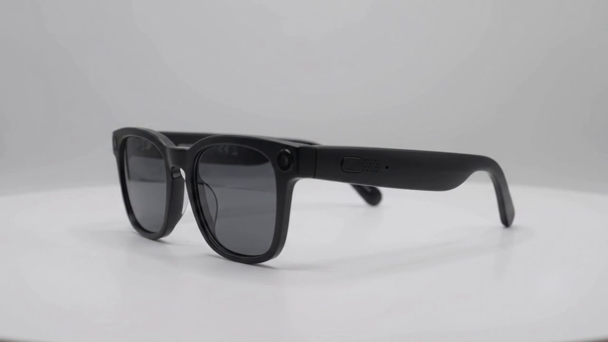

Design
Three things on the temple.
There is no display. Every response is spoken, which means nothing on your face can take you out of the room you are in.
Turn the glasses

The parts
Each one is there for a reason you can hear.
- 01 · Button
- Press to ask.
A single recessed button on the outer temple. It is the only way to ask for a full answer, which is why nothing is ever spoken at you unprompted.
- 02 · Speaker
- Open ear.
A grille set into the underside of the arm, aimed at your ear rather than into it. Your ear canal stays open, so the room stays audible and the real conversation still gets through.
- 03 · Microphone
- Hears the room.
A pinhole at the hinge. It hears the room in order to know when someone is speaking, and stores no audio.
Decisions
What it leaves out is the design.
Nothing to look at.
So nothing takes you out of the room. Every response is spoken, at the moment the room makes space for it.
Nothing in your ear.
The ear canal stays open, so the real conversation still gets through. Blynq adds to the room; it never replaces it.
It looks like glasses.
Nearly a third of assistive devices end up abandoned, and being seen using one is part of why. So it looks like eyewear, and we say so once. Phillips & Zhao, Assistive Technology, 1993 · Shinohara & Wobbrock, CHI, 2011